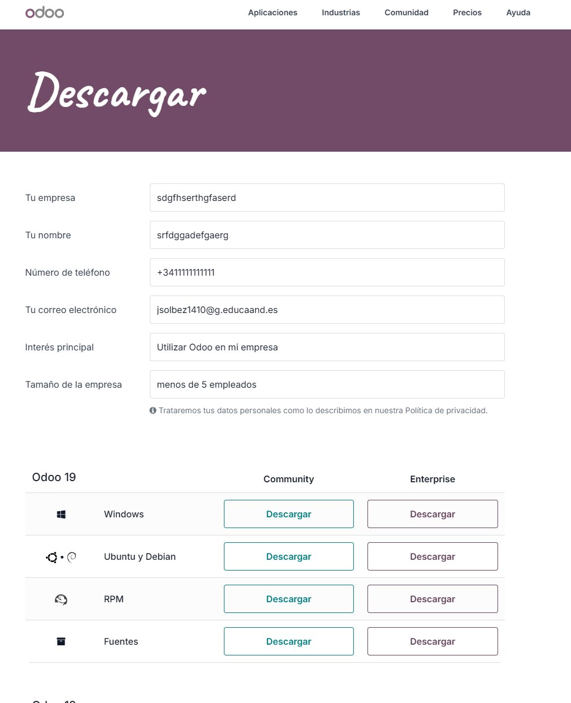
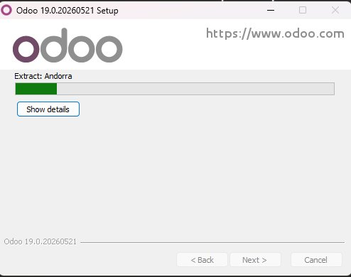
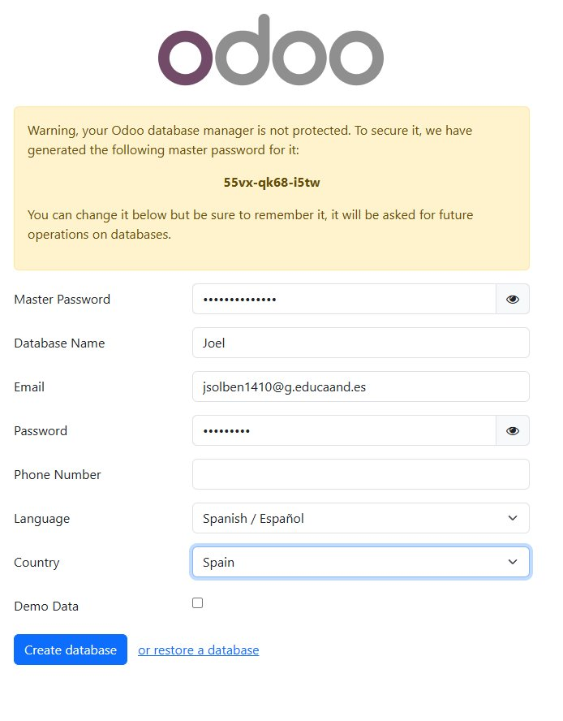
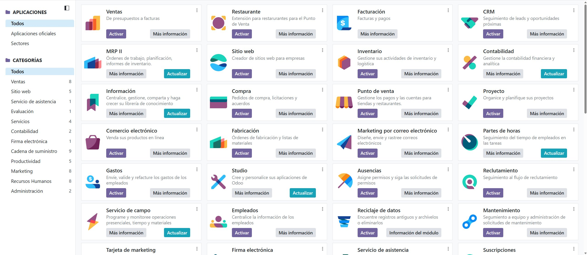
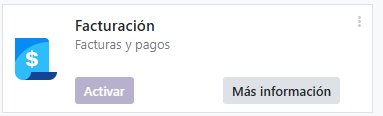
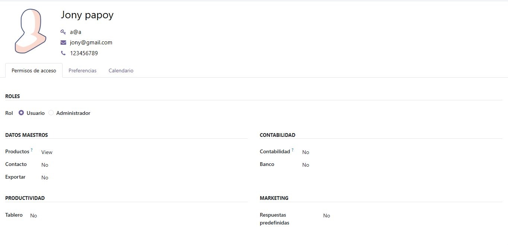
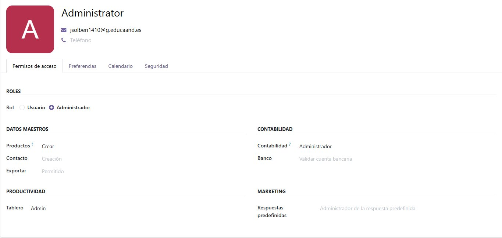

Odoo
Odoo es un SGE de código abierto que agrupa en una sola plataforma todo lo necesario para gestionar una empresa: ventas, inventario, contabilidad, CRM, recursos humanos y mucho más. Su versión Community es gratuita y funciona tanto en Windows como en Linux.
Instalación
El instalador de Odoo Community para Windows se descarga directamente desde su web oficial e incluye PostgreSQL, la base de datos que utiliza internamente, por lo que no es necesario instalarla por separado.

- Acceder a odoo.com/page/download y descargar el instalador.
- Ejecutarlo y recorrer el asistente: seleccionar el idioma, aceptar la licencia (LGPLv3) y mantener el tipo de instalación «All in One».
- Indicar el usuario y la contraseña de PostgreSQL. Por defecto se crea el usuario
openpg. - Seleccionar la carpeta de destino (por defecto
C:\Program Files\Odoo 19.0). - Aguardar a que el proceso finalice; puede llevar varios minutos al instalar también PostgreSQL y sus dependencias.
- Abrir el navegador y navegar a
http://localhost:8069para configurar la primera base de datos.

Crear la base de datos inicial
La primera vez que se accede a http://localhost:8069 aparece un formulario donde se deben completar: contraseña maestra, nombre para la base de datos, credenciales del administrador, idioma y país. Se recomienda activar la carga de datos de demostración para poder realizar pruebas desde el primer momento.

Al confirmar con Create database, Odoo carga el panel principal y el sistema ya está listo para trabajar.
Configuración de la empresa
El primer paso tras acceder es actualizar los datos de la organización en Ajustes → Usuarios y empresas → Empresas: nombre, dirección fiscal, NIF y logotipo. Esta información aparecerá automáticamente en las facturas y en cualquier documento generado por el sistema.
Activación de módulos
De manera predeterminada Odoo arranca con muy pocos módulos habilitados. Para esta práctica se han activado los siguientes:
- Facturación
- Inventario
- CRM
- Contactos
- Ventas
Para instalarlos hay que ir a la sección de Aplicaciones, localizar el módulo deseado y pulsar Activar. El propio sistema resuelve las dependencias e instala de forma automática todo lo que cada módulo requiera. Por ejemplo, el módulo Facturación se encarga de gestionar las facturas y los pagos, mientras que Contactos permite centralizar la libreta de direcciones de la empresa.


Alta de usuarios
Para registrar nuevas personas en el sistema se accede a Ajustes → Usuarios y empresas → Usuarios. Al crear un nuevo registro se introduce el nombre, la dirección de correo (que actuará como identificador de acceso) y los niveles de permiso en cada módulo. Una vez guardado, Odoo envía automáticamente un enlace al correo del usuario para que establezca su propia contraseña.


Copias de seguridad
Desde http://localhost:8069/web/database/manager se administran las bases de datos disponibles: se pueden generar copias en formato .zip, restaurarlas, duplicarlas o eliminarlas. Conviene hacer una copia antes de instalar módulos nuevos o de realizar cambios de cierta envergadura.
Control de acceso
Odoo gestiona la seguridad a través de una combinación de usuarios, grupos y permisos. Cada cuenta tiene sus propias credenciales y pertenece a uno o varios grupos, que son los que determinan qué puede ver y hacer dentro de cada módulo.
Categorías de usuario
| Categoría | Descripción |
|---|---|
| Público | Visitantes sin sesión iniciada. Solo acceden a la parte pública del sitio web. |
| Portal | Clientes o proveedores externos. Visualizan únicamente su información: pedidos, facturas, etc. |
| Interno | Empleados de la organización con acceso completo a la interfaz de gestión. |
Roles de acceso
En la ficha de cada usuario, dentro de la pestaña «Access Rights», se configura el nivel de acceso. Odoo distingue dos roles principales:
- Administrator — acceso sin restricciones al sistema, incluyendo la configuración técnica.
- User — acceso estándar limitado a los módulos y funciones que se le hayan asignado.
El rol se modifica desde Ajustes → Usuarios y empresas → Usuarios, abriendo el registro correspondiente. En esa misma pestaña se pueden gestionar también los permisos sobre los Master Data y la exportación de información.
Reglas de registro
Además de los grupos, existen reglas de registro que filtran qué datos puede consultar cada usuario. Por ejemplo, un comercial con la regla «solo registros propios» únicamente verá las oportunidades en las que figure como responsable. Estas reglas se configuran desde Ajustes → Técnico → Seguridad → Reglas de registro, activando previamente el modo desarrollador.
Verificación en dos pasos
Cualquier usuario puede habilitar la autenticación en dos pasos desde su perfil. Al activarla, al introducir la contraseña habitual se solicita además un código temporal generado por una aplicación de autenticación como Google Authenticator. Se recomienda activarla como mínimo en la cuenta administradora.
Recomendaciones de seguridad
- Activar 2FA en todas las cuentas con permisos elevados.
- Revisar periódicamente el listado de usuarios y deshabilitar los que ya no estén en uso.
- Usar contraseñas robustas y distintas para cada cuenta.
- No compartir credenciales entre varias personas.